Aizawl
Aizawl, the capital, is known for its vibrant culture and scenic beauty. Explore the Mizoram State Museum and the iconic Aizawl Cathedral.
 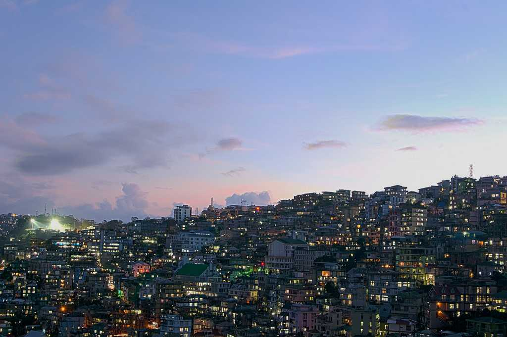
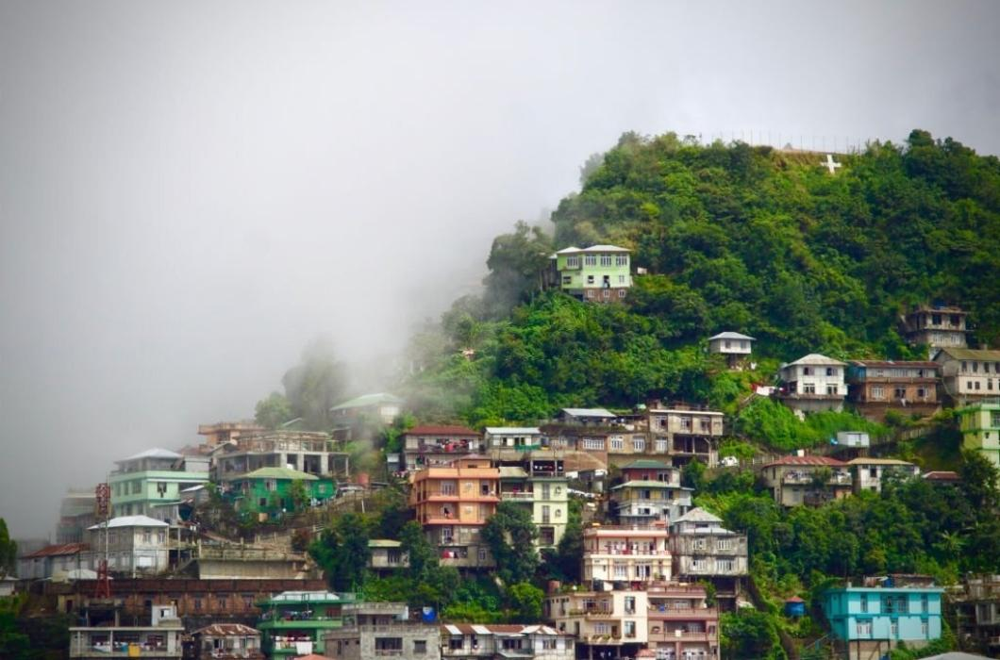
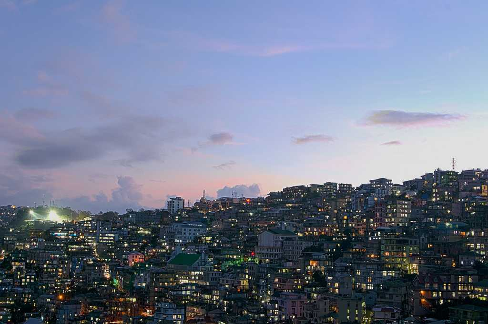
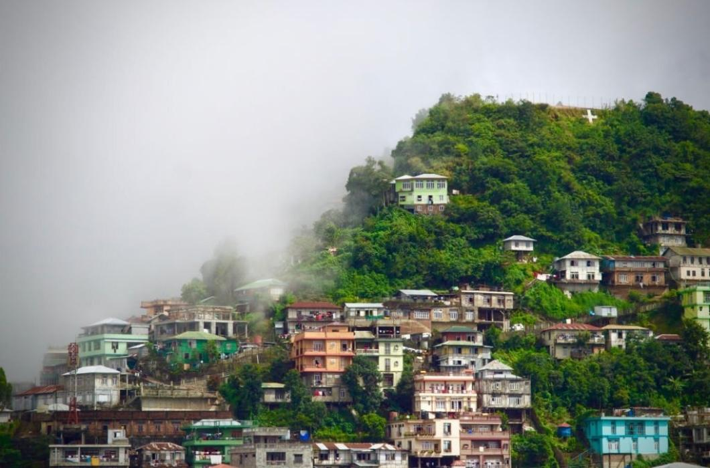
Aizawl, the capital, is known for its vibrant culture and scenic beauty. Explore the Mizoram State Museum and the iconic Aizawl Cathedral.
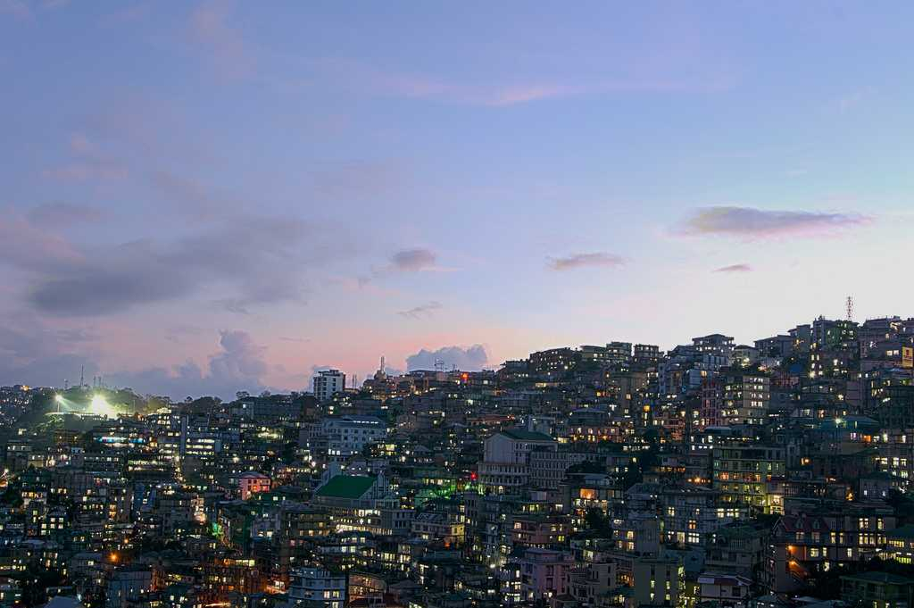
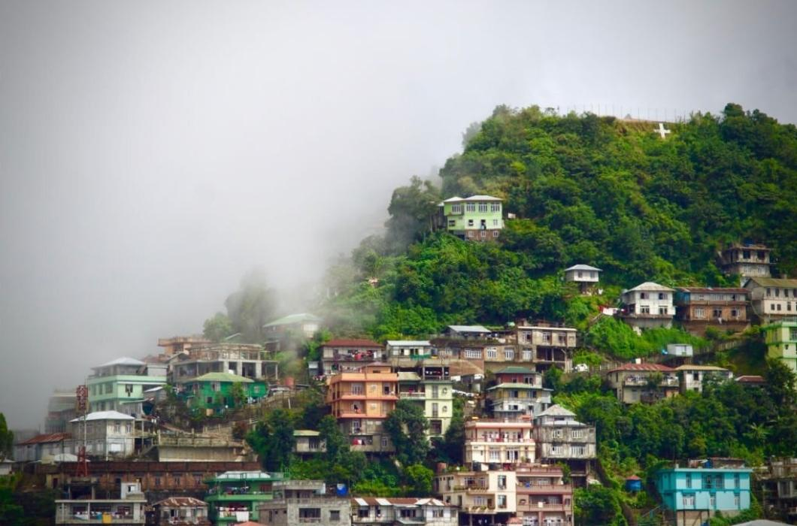
Reiek, a picturesque mountain, offers panoramic views of the surrounding hills. Visit the Reiek Heritage Village for a glimpse of Mizo culture.
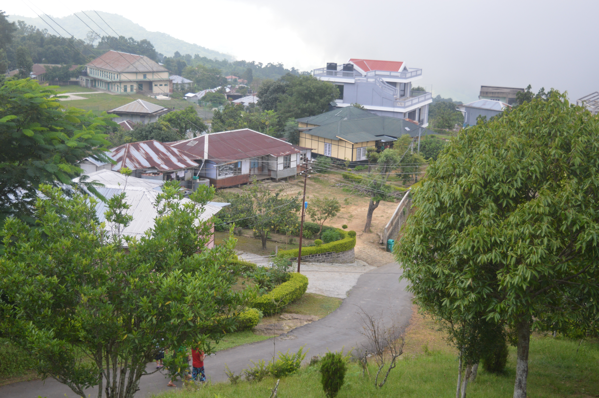 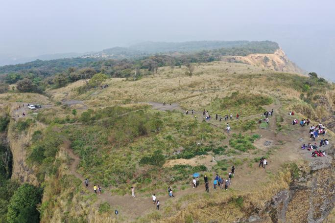
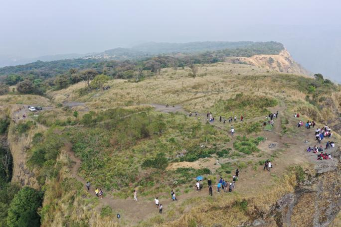
Phawngpui, also known as the Blue Mountain, is the highest peak in Mizoram. It's a haven for nature lovers and offers stunning trekking routes.
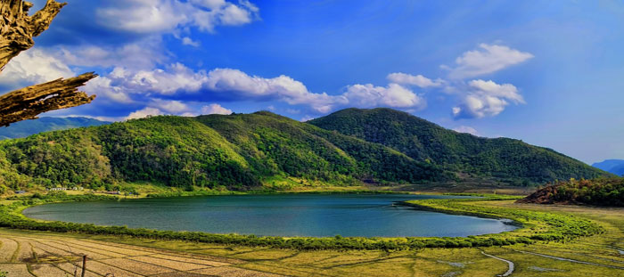 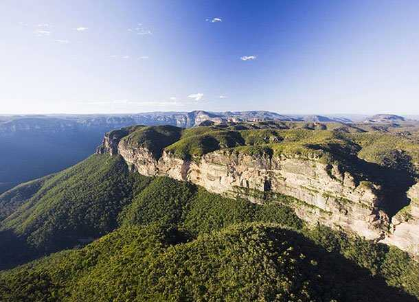 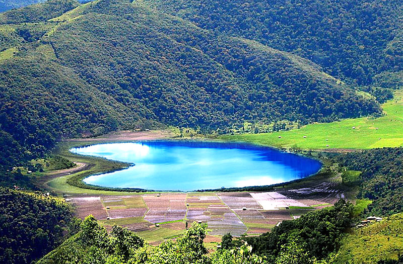